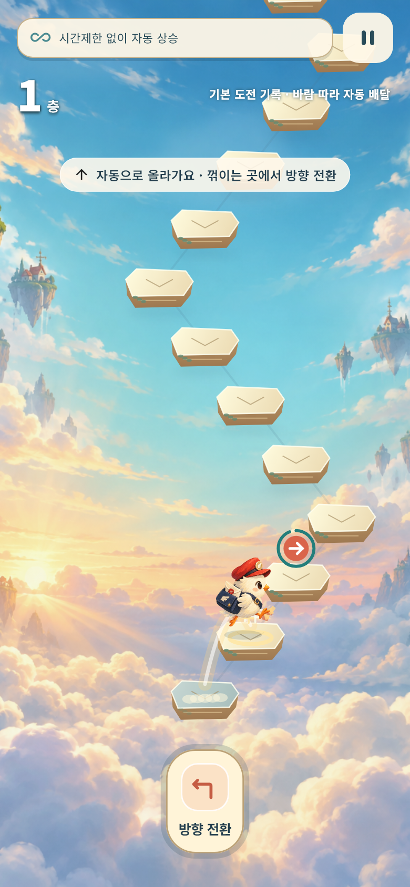

LABHUB
소개
지원
개인정보
한국어
English
日本語
Español
구름 너머로, 한 계단 더.
오르기와 방향 전환으로 편지를 배달하는 오프라인 아케이드 게임.
Android · iOS 출시 준비 중

구름 우체국: 무한의 계단
두 버튼으로 이어가는 계단 배달
시간제한 도전과 방향 전환 자동 배달
느림·보통·빠름 자동 연습
스킨·배지·아이템과 나만의 배달 기록